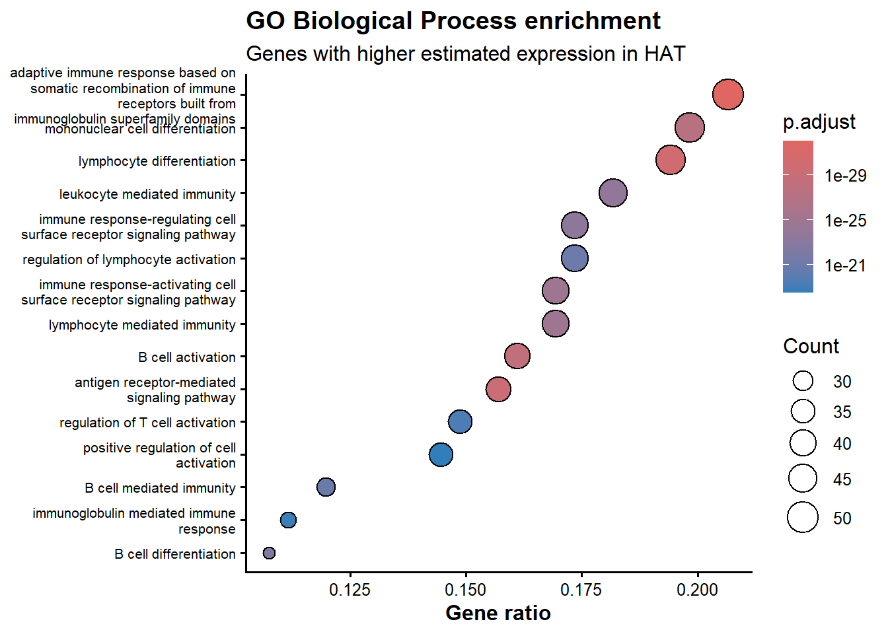
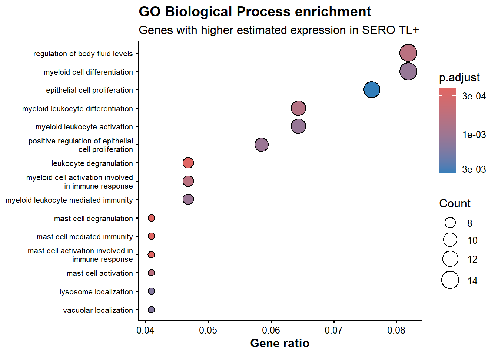

library(DESeq2)
library(clusterProfiler)
library(enrichplot)
library(org.Hs.eg.db)
library(ggplot2)
dir.create("results", showWarnings = FALSE)
dir.create(file.path("results", "tables"), recursive = TRUE, showWarnings = FALSE)
dir.create(file.path("results", "figures"), recursive = TRUE, showWarnings = FALSE)
# Load the fitted model saved in Chapter 4
dds_fitted <- readRDS("results/objects/dds_fitted.rds")
# Recreate the same directional contrast explored in Chapter 5
res_hat_vs_sero <- results(
dds_fitted,
contrast = c("status", "hat", "sero"),
alpha = 0.05
)
result_data <- data.frame(
gene_id = rownames(res_hat_vs_sero),
as.data.frame(res_hat_vs_sero),
row.names = NULL,
check.names = FALSE,
stringsAsFactors = FALSE
)
# Reuse the annotation resource introduced in Chapter 5
annotation_data <- read.csv(
"human_annotations_from_orgHs.csv",
check.names = FALSE,
stringsAsFactors = FALSE
)13 Functional Enrichment Analysis
13.1 What you’ll learn
In Chapter 5, you connected the Ensembl identifiers in the differential-expression results to the supplied human annotation table using match(). That table also contains Entrez identifiers. In this chapter, you will reuse and audit that existing annotation, rather than learn a second identifier-mapping workflow.
You will use Gene Ontology (GO) over-representation analysis with clusterProfiler to move from individual differentially expressed genes and the expression signatures in Chapters 9 and 10 towards testable biological hypotheses about symptomatic HAT and SERO TL+.
NoteLearning outcomes
By the end of this chapter, you should be able to:
- explain the question answered by over-representation analysis (ORA);
- reuse the annotation concepts and table introduced in Chapter 5;
- audit whether Entrez mapping covers the selected genes and tested-gene background;
- define a defensible tested-gene background universe;
- run GO Biological Process enrichment separately for genes higher in HAT and higher in SERO TL+;
- interrogate a dot plot and its underlying result table;
- connect functional enrichment to the expression signatures from Chapters 9 and 10;
- report analytical choices, limitations and a biologically testable next step.
ISCB competency framework v3 alignment: B3, C3, D3, E3, F3, H3 and K3, principally at application and analysis level. The session emphasises reuse of established data resources, reproducible analysis, evaluation of limitations and communication of evidence for a research-scientist audience.
ImportantResearch question
Which GO Biological Process terms are over-represented among genes with higher estimated expression in symptomatic HAT than in SERO TL+, and do genes higher in SERO TL+ suggest contrasting biological themes?
This is an observational comparison. Enrichment can identify functional annotations associated with the selected gene lists. It cannot demonstrate that a process caused symptoms, that every gene in a process changed, or that the process is active in every participant.
13.2 Session route map
This session is designed for approximately 150 minutes:
- Reconnect with the biological question and predict (15 min)
- Retrieve and verify the Chapter 5 annotated result (20 min)
- Reuse and audit the identifier annotation (15 min)
- Define the ORA universe and directional gene sets (25 min)
- Run and inspect HAT enrichment (30 min)
- Repeat for SERO TL+ and compare themes (25 min)
- Interpret, export and report limitations (20 min)
The central workflow is:
Chapter 5 annotation → mapped tested genes → directional gene list + tested-gene universe → ORA → term-level and gene-level inspection → cautious biological hypothesis
13.3 1. Reconnect with earlier chapters
Chapter 4 fitted the DESeq2 model and defined the contrast as HAT versus SERO TL+. Chapter 5 then explored and annotated that result. For this contrast:
- a positive
log2FoldChangemeans higher estimated expression in HAT; - a negative
log2FoldChangemeans higher estimated expression in SERO TL+; padjdescribes statistical evidence after correcting for testing many genes.
Chapters 9 and 10 showed that many prioritised genes form coordinated expression patterns. Functional enrichment now provides a systematic way to ask whether the selected genes share more biological-process annotations than expected from the genes that could have been selected.
TipPRIMM activity 1: Predict
Before running new code, discuss:
- If symptomatic HAT is associated with altered host immune activity, which broad biological themes might be enriched among genes higher in HAT?
- Would every gene assigned to an enriched term need to have the same fold change?
- Would enrichment of an immune-related term prove that immune activity caused the clinical difference?
- Why might genes higher in SERO TL+ reveal different themes rather than simply the opposite list?
Record one prediction:
# We predict that genes higher in HAT may be enriched for __________
# because earlier chapters showed __________.
# This would suggest __________, but would not demonstrate __________.
NoteBiological context
HAT is caused by Trypanosoma parasites. In this dataset, HAT samples are from symptomatic participants, whereas SERO TL+ samples are serology-positive without the overt HAT phenotype. Expression differences may reflect immune responses, infection stage, parasite burden, circulating cell composition, participant heterogeneity or technical factors. The analysis therefore identifies associations with the sampled clinical groups rather than a controlled transition between states.
13.4 2. Continue from Chapters 4 and 5
Use the same RStudio Project. Chapter 4 saved the fitted model, and Chapter 5 introduced human_annotations_from_orgHs.csv as the annotation lookup table.
TipRecap: essential setup code
13.4.1 Verify the result and annotation inputs
resultsNames(dds_fitted)[1] "Intercept" "status_hat_vs_ctrl" "status_sero_vs_ctrl"table(colData(dds_fitted)$status)
ctrl hat sero
6 9 6 dim(result_data)[1] 30076 7colnames(result_data)[1] "gene_id" "baseMean" "log2FoldChange" "lfcSE"
[5] "stat" "pvalue" "padj" colnames(annotation_data)[1] "" "ENSEMBL" "SYMBOL" "GENENAME"
[5] "ENTREZID" "SYMBOL_SAFE" "SYMBOL_UNIQUE"head(annotation_data[, c("ENSEMBL", "SYMBOL_SAFE", "ENTREZID")]) ENSEMBL SYMBOL_SAFE ENTREZID
1 ENSG00000000003 TSPAN6 7105
2 ENSG00000000419 DPM1 8813
3 ENSG00000000457 SCYL3 57147
4 ENSG00000000460 FIRRM 55732
5 ENSG00000000938 FGR 2268
6 ENSG00000000971 CFH 3075
ImportantCheckpoint
Before continuing, answer:
- What does one row of
result_datarepresent? - What does a positive
log2FoldChangemean for this contrast? - Which column connects
result_datatoannotation_data? - Which annotation column was primarily used in Chapter 5?
- Which additional annotation column is needed by this enrichment workflow?
13.5 3. Reuse the Chapter 5 annotation
Chapter 5 used match() to connect result_data$gene_id with annotation_data$ENSEMBL and retrieve readable gene symbols. We will use the same rows and the same matching concept to retrieve the Entrez identifiers already present in the supplied annotation table.
This is not a new mapping method. The new question is whether the existing annotation provides enough coverage for both:
- the genes selected for enrichment;
- the tested-gene background against which enrichment is assessed.
# Find the corresponding annotation row for every DE result
matched_rows <- match(
result_data$gene_id,
annotation_data$ENSEMBL
)
# Reuse the Chapter 5 gene symbols
result_data$symbol <- annotation_data$SYMBOL_SAFE[matched_rows]
# Retrieve the Entrez IDs from the same matched rows
result_data$entrez_id <- annotation_data$ENTREZID[matched_rows]
head(
result_data[, c(
"gene_id", "symbol", "entrez_id",
"log2FoldChange", "padj"
)]
) gene_id symbol entrez_id log2FoldChange padj
1 ENSG00000000003 TSPAN6 7105 0.1491012 0.88709268
2 ENSG00000000419 DPM1 8813 0.0795562 0.87134542
3 ENSG00000000457 SCYL3 57147 0.2155434 0.17630421
4 ENSG00000000460 FIRRM 55732 0.4804100 0.06383222
5 ENSG00000000938 FGR 2268 -0.3363032 0.18347393
6 ENSG00000000971 CFH 3075 -0.3024316 0.67718311
NoteWhat is new here?
Chapter 5 asked: Which readable annotation belongs to this Ensembl gene?
Chapter 11 asks: Which mapped genes were eligible to enter an enrichment list, and which mapped genes were actually selected?
The lookup procedure is reused. Its analytical role is new.
13.5.1 Audit the reused mapping
First identify genes with a reported adjusted result. These genes define the starting pool for the enrichment background.
tested_genes <- result_data[
!is.na(result_data$padj),
]
mapped_tested_genes <- tested_genes[
!is.na(tested_genes$entrez_id) &
tested_genes$entrez_id != "",
]
mapping_audit <- data.frame(
measure = c(
"Genes with a non-missing adjusted result",
"Genes with an Entrez identifier",
"Genes without an Entrez identifier",
"Unique mapped Entrez identifiers"
),
value = c(
nrow(tested_genes),
nrow(mapped_tested_genes),
nrow(tested_genes) - nrow(mapped_tested_genes),
length(unique(mapped_tested_genes$entrez_id))
)
)
mapping_success_percent <- round(
100 * nrow(mapped_tested_genes) / nrow(tested_genes),
1
)
mapping_audit measure value
1 Genes with a non-missing adjusted result 22425
2 Genes with an Entrez identifier 17001
3 Genes without an Entrez identifier 5424
4 Unique mapped Entrez identifiers 16978mapping_success_percent[1] 75.8
TipPRIMM activity 2: Run and investigate
After running the audit:
- What percentage of tested genes has an Entrez identifier?
- Why might the number of mapped rows differ from the number of unique Entrez IDs?
- Which gene classes might be less likely to have an Entrez identifier?
- Could mapping loss affect the selected list and background differently?
- What mapping information should be reported with the enrichment result?
WarningDo not silently remap missing genes
For consistency with Chapter 5, this workflow uses the supplied course annotation table as the source of truth. Missing Entrez IDs are retained as an explicit limitation. Do not combine several annotation services opportunistically just to maximise the number of reported terms, because that would make the analysis harder to reproduce and could mix annotation releases.
13.6 4. Understand the ORA question
ORA asks whether genes annotated to a GO term are more frequent in a selected list than expected relative to a background universe. Because many GO terms are tested, p-values are corrected for multiple testing.
For this chapter:
- the selected list contains mapped genes meeting the stated adjusted p-value and fold-change thresholds in one direction;
- the universe contains unique mapped genes with a non-missing adjusted DE result;
- the annotation source used by
enrichGO()is the humanOrgDbpackage; - the ontology is GO Biological Process;
- every reported result is conditional on these choices.
WarningORA does not measure pathway activity
ORA begins with a thresholded gene list. It does not use the expression value of every gene. A significant term does not show that every member gene changed, that the complete process is active, or that the process caused the HAT phenotype.
13.7 5. Define the tested-gene universe
The universe should represent genes that could plausibly have entered the selected list. Here, that means unique Entrez identifiers for genes with a non-missing adjusted result in the same HAT-versus-SERO TL+ analysis.
ora_universe <- unique(mapped_tested_genes$entrez_id)
length(ora_universe)[1] 16978
TipParsons task: reconstruct the universe
Arrange these operations into a defensible order:
ora_universe <- unique(mapped_tested_genes$entrez_id)
matched_rows <- match(result_data$gene_id, annotation_data$ENSEMBL)
mapped_tested_genes <- tested_genes[!is.na(tested_genes$entrez_id), ]
tested_genes <- result_data[!is.na(result_data$padj), ]
result_data$entrez_id <- annotation_data$ENTREZID[matched_rows]Then explain why every gene in org.Hs.eg.db would be a less appropriate background.
TipSolution
matched_rows <- match(result_data$gene_id, annotation_data$ENSEMBL)
result_data$entrez_id <- annotation_data$ENTREZID[matched_rows]
tested_genes <- result_data[!is.na(result_data$padj), ]
mapped_tested_genes <- tested_genes[!is.na(tested_genes$entrez_id), ]
ora_universe <- unique(mapped_tested_genes$entrez_id)The universe should represent genes that could have entered the selected list. All annotated human genes include many genes that were not tested or did not have enough information to receive an adjusted result in this RNA-seq analysis.
13.8 6. Define directional gene lists
Mixing positive and negative fold changes could combine different biological patterns. Analyse the two directions separately while keeping the thresholds and universe consistent.
hat_genes <- mapped_tested_genes[
mapped_tested_genes$padj < 0.05 &
mapped_tested_genes$log2FoldChange > 1,
]
sero_genes <- mapped_tested_genes[
mapped_tested_genes$padj < 0.05 &
mapped_tested_genes$log2FoldChange < -1,
]
selection_summary <- data.frame(
gene_set = c("Higher in HAT", "Higher in SERO TL+"),
mapped_rows = c(nrow(hat_genes), nrow(sero_genes)),
unique_entrez_ids = c(
length(unique(hat_genes$entrez_id)),
length(unique(sero_genes$entrez_id))
)
)
selection_summary gene_set mapped_rows unique_entrez_ids
1 Higher in HAT 305 305
2 Higher in SERO TL+ 211 211
ImportantThresholds organise evidence
The thresholds reproduce the gene categories used for the Chapter 5 volcano plot. They are practical selection rules, not universal boundaries between biologically important and unimportant genes. Two genes immediately either side of a threshold may have very similar evidence.
TipPRIMM activity 3: Predict
Before running ORA:
- Which directional list is larger?
- Does a larger list automatically imply stronger enrichment?
- Predict one broad theme for each direction.
- What might happen if one list contains very few uniquely mapped genes?
13.9 7. Run GO Biological Process ORA for genes higher in HAT
hat_ora <- clusterProfiler::enrichGO(
gene = unique(hat_genes$entrez_id),
universe = ora_universe,
OrgDb = org.Hs.eg.db::org.Hs.eg.db,
keyType = "ENTREZID",
ont = "BP",
pAdjustMethod = "BH",
pvalueCutoff = 0.05,
qvalueCutoff = 0.20,
minGSSize = 10,
maxGSSize = 500,
readable = TRUE
)`universe` is not in character and will be ignored...hat_ora_table <- as.data.frame(hat_ora)
nrow(hat_ora_table)[1] 384head(hat_ora_table) ID
GO:0002460 GO:0002460
GO:0030098 GO:0030098
GO:0050851 GO:0050851
GO:0042113 GO:0042113
GO:1903131 GO:1903131
GO:0002429 GO:0002429
Description
GO:0002460 adaptive immune response based on somatic recombination of immune receptors built from immunoglobulin superfamily domains
GO:0030098 lymphocyte differentiation
GO:0050851 antigen receptor-mediated signaling pathway
GO:0042113 B cell activation
GO:1903131 mononuclear cell differentiation
GO:0002429 immune response-activating cell surface receptor signaling pathway
GeneRatio BgRatio RichFactor FoldEnrichment zScore pvalue
GO:0002460 50/242 377/18842 0.1326260 10.326194 20.86429 3.254366e-36
GO:0030098 47/242 356/18842 0.1320225 10.279204 20.16125 6.315021e-34
GO:0050851 38/242 206/18842 0.1844660 14.362433 21.99611 4.602339e-33
GO:0042113 39/242 238/18842 0.1638655 12.758490 20.82284 7.517253e-32
GO:1903131 48/242 439/18842 0.1093394 8.513112 18.16816 8.228775e-31
GO:0002429 41/242 336/18842 0.1220238 9.500713 17.93378 3.242099e-28
p.adjust qvalue
GO:0002460 8.907199e-33 2.529615e-33
GO:0030098 8.642106e-31 2.454329e-31
GO:0050851 4.198867e-30 1.192464e-30
GO:0042113 5.143681e-29 1.460788e-29
GO:1903131 4.504432e-28 1.279244e-28
GO:0002429 1.478938e-25 4.200134e-26
geneID
GO:0002460 CD69/CEACAM1/IGHV3-33/IGHV3-20/IGHV4-28/IGHG1/IGHV3-66/IL12RB2/CD19/CD40/CD70/ADAM17/IGHA1/CD40LG/RFTN1/CD4/IRF4/TRAF6/STAT3/IGHV4-39/IGHG3/BCL6/CD274/CD27/IL12B/IGHV5-51/IGHV2-70D/BACH2/IGHV4-59/IGHV3-13/CD80/IGHV3-21/BTK/PHB1/IL21/IL23R/IGHV3-23/IGHV3-11/IGHV3-53/CR2/RORC/IGHV2-70/IGHV4-34/IL21R/PDCD1/IGHV4-61/CD1C/PTPRC/LEF1/IGHV3-30
GO:0030098 PIK3R1/CD69/PTPRJ/MS4A1/SYK/AICDA/CD3D/IL2RA/HDAC9/CD19/POU2AF1/ADAM17/IRF8/CD4/IRF4/STAT3/BCL6/CD27/PRDM1/ZAP70/IL12B/RAG1/SPIB/ICOS/FLT3/EOMES/IL7R/PIK3R2/CD80/CTLA4/CD79B/BTK/IL21/IL23R/IGHM/HDAC4/TNFSF9/TCF7/CR2/BLNK/CD28/RORC/PAX5/CD86/CD79A/PTPRC/LEF1
GO:0050851 PDCD1LG2/CEACAM1/PTPRJ/MS4A1/SYK/TXK/PTPN11/IGHG1/CD3D/CD19/HHLA2/IGHA1/RFTN1/CD4/TRAF6/IGHG3/CD274/BLK/ZAP70/THY1/CD80/CTLA4/CD79B/BTK/LAT/IGHM/CD160/CD22/BLNK/CD28/BANK1/BTN1A1/UBR2/CD86/CD79A/PDCD1/PTPRC/FCHO1
GO:0042113 PIK3R1/PTPRJ/FCRL1/MS4A1/SYK/AICDA/IL12RB2/HDAC9/CD19/CD40/CD70/POU2AF1/ADAM17/IRF8/CD40LG/STAT3/CD27/TNFRSF13C/ZAP70/RAG1/SPIB/FLT3/PIK3R2/CTLA4/CD79B/BTK/PHB1/IL21/IGHM/HDAC4/CR2/CD22/BLNK/PAX5/BANK1/CD86/CD79A/TNFRSF13B/PTPRC
GO:1903131 PIK3R1/CD69/PTPRJ/MS4A1/SYK/AICDA/CD3D/IL2RA/HDAC9/CD19/POU2AF1/ADAM17/IRF8/CD4/IRF4/STAT3/BCL6/CD27/PRDM1/IFNG/ZAP70/IL12B/RAG1/SPIB/ICOS/FLT3/EOMES/IL7R/PIK3R2/CD80/CTLA4/CD79B/BTK/IL21/IL23R/IGHM/HDAC4/TNFSF9/TCF7/CR2/BLNK/CD28/RORC/PAX5/CD86/CD79A/PTPRC/LEF1
GO:0002429 PIK3R1/PDCD1LG2/CEACAM1/PTPRJ/MS4A1/SYK/TXK/PTPN11/IGHG1/CD3D/CD19/HHLA2/IGHA1/RFTN1/CD4/TRAF6/IGHG3/CD274/IFNG/BLK/ZAP70/THY1/CD80/CTLA4/CD79B/BTK/LAT/IGHM/CD160/CR2/CD22/BLNK/CD28/BANK1/BTN1A1/UBR2/CD86/CD79A/PDCD1/PTPRC/FCHO1
Count
GO:0002460 50
GO:0030098 47
GO:0050851 38
GO:0042113 39
GO:1903131 48
GO:0002429 4113.9.1 Read the table before plotting
Important columns include:
ID: GO term identifier;Description: readable term name;GeneRatio: selected genes assigned to the term relative to the effective input list;BgRatio: universe genes assigned to the term relative to the effective background;p.adjust: multiple-testing-adjusted p-value;Count: number of selected genes contributing to the term;geneID: contributing gene identifiers, made readable where possible.
if (nrow(hat_ora_table) > 0) {
hat_ora_table[
seq_len(min(10, nrow(hat_ora_table))),
c("ID", "Description", "GeneRatio", "BgRatio",
"p.adjust", "Count", "geneID")
]
} ID
GO:0002460 GO:0002460
GO:0030098 GO:0030098
GO:0050851 GO:0050851
GO:0042113 GO:0042113
GO:1903131 GO:1903131
GO:0002429 GO:0002429
GO:0002449 GO:0002449
GO:0002443 GO:0002443
GO:0002768 GO:0002768
GO:0030183 GO:0030183
Description
GO:0002460 adaptive immune response based on somatic recombination of immune receptors built from immunoglobulin superfamily domains
GO:0030098 lymphocyte differentiation
GO:0050851 antigen receptor-mediated signaling pathway
GO:0042113 B cell activation
GO:1903131 mononuclear cell differentiation
GO:0002429 immune response-activating cell surface receptor signaling pathway
GO:0002449 lymphocyte mediated immunity
GO:0002443 leukocyte mediated immunity
GO:0002768 immune response-regulating cell surface receptor signaling pathway
GO:0030183 B cell differentiation
GeneRatio BgRatio p.adjust Count
GO:0002460 50/242 377/18842 8.907199e-33 50
GO:0030098 47/242 356/18842 8.642106e-31 47
GO:0050851 38/242 206/18842 4.198867e-30 38
GO:0042113 39/242 238/18842 5.143681e-29 39
GO:1903131 48/242 439/18842 4.504432e-28 48
GO:0002429 41/242 336/18842 1.478938e-25 41
GO:0002449 41/242 339/18842 1.809793e-25 41
GO:0002443 44/242 429/18842 1.561956e-24 44
GO:0002768 42/242 392/18842 4.037525e-24 42
GO:0030183 26/242 114/18842 5.913046e-23 26
geneID
GO:0002460 CD69/CEACAM1/IGHV3-33/IGHV3-20/IGHV4-28/IGHG1/IGHV3-66/IL12RB2/CD19/CD40/CD70/ADAM17/IGHA1/CD40LG/RFTN1/CD4/IRF4/TRAF6/STAT3/IGHV4-39/IGHG3/BCL6/CD274/CD27/IL12B/IGHV5-51/IGHV2-70D/BACH2/IGHV4-59/IGHV3-13/CD80/IGHV3-21/BTK/PHB1/IL21/IL23R/IGHV3-23/IGHV3-11/IGHV3-53/CR2/RORC/IGHV2-70/IGHV4-34/IL21R/PDCD1/IGHV4-61/CD1C/PTPRC/LEF1/IGHV3-30
GO:0030098 PIK3R1/CD69/PTPRJ/MS4A1/SYK/AICDA/CD3D/IL2RA/HDAC9/CD19/POU2AF1/ADAM17/IRF8/CD4/IRF4/STAT3/BCL6/CD27/PRDM1/ZAP70/IL12B/RAG1/SPIB/ICOS/FLT3/EOMES/IL7R/PIK3R2/CD80/CTLA4/CD79B/BTK/IL21/IL23R/IGHM/HDAC4/TNFSF9/TCF7/CR2/BLNK/CD28/RORC/PAX5/CD86/CD79A/PTPRC/LEF1
GO:0050851 PDCD1LG2/CEACAM1/PTPRJ/MS4A1/SYK/TXK/PTPN11/IGHG1/CD3D/CD19/HHLA2/IGHA1/RFTN1/CD4/TRAF6/IGHG3/CD274/BLK/ZAP70/THY1/CD80/CTLA4/CD79B/BTK/LAT/IGHM/CD160/CD22/BLNK/CD28/BANK1/BTN1A1/UBR2/CD86/CD79A/PDCD1/PTPRC/FCHO1
GO:0042113 PIK3R1/PTPRJ/FCRL1/MS4A1/SYK/AICDA/IL12RB2/HDAC9/CD19/CD40/CD70/POU2AF1/ADAM17/IRF8/CD40LG/STAT3/CD27/TNFRSF13C/ZAP70/RAG1/SPIB/FLT3/PIK3R2/CTLA4/CD79B/BTK/PHB1/IL21/IGHM/HDAC4/CR2/CD22/BLNK/PAX5/BANK1/CD86/CD79A/TNFRSF13B/PTPRC
GO:1903131 PIK3R1/CD69/PTPRJ/MS4A1/SYK/AICDA/CD3D/IL2RA/HDAC9/CD19/POU2AF1/ADAM17/IRF8/CD4/IRF4/STAT3/BCL6/CD27/PRDM1/IFNG/ZAP70/IL12B/RAG1/SPIB/ICOS/FLT3/EOMES/IL7R/PIK3R2/CD80/CTLA4/CD79B/BTK/IL21/IL23R/IGHM/HDAC4/TNFSF9/TCF7/CR2/BLNK/CD28/RORC/PAX5/CD86/CD79A/PTPRC/LEF1
GO:0002429 PIK3R1/PDCD1LG2/CEACAM1/PTPRJ/MS4A1/SYK/TXK/PTPN11/IGHG1/CD3D/CD19/HHLA2/IGHA1/RFTN1/CD4/TRAF6/IGHG3/CD274/IFNG/BLK/ZAP70/THY1/CD80/CTLA4/CD79B/BTK/LAT/IGHM/CD160/CR2/CD22/BLNK/CD28/BANK1/BTN1A1/UBR2/CD86/CD79A/PDCD1/PTPRC/FCHO1
GO:0002449 PIK3R1/CEACAM1/IGHV3-33/IGHV3-20/IGHV4-28/IGHG1/IGHV3-66/CD19/CD40/CD70/IGHA1/CD40LG/RFTN1/TRAF6/IGHV4-39/IGHG3/CD274/CD27/IL12B/IGHV5-51/IGHV2-70D/IGHV4-59/IGHV3-13/CD80/IGHV3-21/BTK/IL21/IL23R/IGHV3-23/IGHV3-11/CD160/IGHV3-53/CR2/IGHV2-70/IGHV4-34/IL21R/PDCD1/IGHV4-61/CD1C/PTPRC/IGHV3-30
GO:0002443 PIK3R1/CEACAM1/IGHV3-33/SYK/IGHV3-20/IGHV4-28/IGHG1/IGHV3-66/CD19/CD40/CD70/ADAM17/IGHA1/CD40LG/RFTN1/TRAF6/IGHV4-39/IGHG3/CD274/CD27/IL12B/IGHV5-51/IGHV2-70D/IGHV4-59/IGHV3-13/CD80/IGHV3-21/BTK/IL21/IL23R/LAT/IGHV3-23/IGHV3-11/CD160/IGHV3-53/CR2/IGHV2-70/IGHV4-34/IL21R/PDCD1/IGHV4-61/CD1C/PTPRC/IGHV3-30
GO:0002768 PIK3R1/PDCD1LG2/CEACAM1/PTPRJ/MS4A1/SYK/TXK/PTPN11/IGHG1/CD3D/CD19/CD40/HHLA2/IGHA1/RFTN1/CD4/TRAF6/IGHG3/CD274/IFNG/BLK/ZAP70/THY1/CD80/CTLA4/CD79B/BTK/LAT/IGHM/CD160/CR2/CD22/BLNK/CD28/BANK1/BTN1A1/UBR2/CD86/CD79A/PDCD1/PTPRC/FCHO1
GO:0030183 PIK3R1/PTPRJ/MS4A1/SYK/AICDA/HDAC9/CD19/POU2AF1/ADAM17/IRF8/STAT3/CD27/RAG1/SPIB/FLT3/PIK3R2/CD79B/BTK/IL21/IGHM/HDAC4/CR2/BLNK/PAX5/CD79A/PTPRC
TipPRIMM activity 4: Run and investigate
Choose one reported term.
- What is its adjusted p-value?
- How many selected genes contribute?
- Which genes are listed in
geneID? - Do any genes contribute to several top terms?
- Is the term sufficiently specific to motivate a useful biological hypothesis?
- What would make you cautious even if its adjusted p-value is small?
13.9.2 Visualise the HAT result
course_theme <- theme_classic(base_size = 12) +
theme(
plot.title = element_text(face = "bold"),
axis.title = element_text(face = "bold"),
axis.text.y = element_text(size = 8)
)
if (nrow(hat_ora_table) > 0) {
hat_ora_dotplot <- enrichplot::dotplot(
hat_ora,
showCategory = 15,
label_format = 35
) +
labs(
title = "GO Biological Process enrichment",
subtitle = "Genes with higher estimated expression in HAT",
x = "Gene ratio"
) +
course_theme
hat_ora_dotplot
} else {
message("No HAT terms passed the reporting thresholds.")
}
NoteHow to read the dot plot
Each point represents one GO term. Position, size and colour summarise columns from the enrichment result. The dot plot is a compact view of the table, not additional evidence. Similar GO terms often share genes because GO is hierarchical.
13.10 8. Repeat ORA for genes higher in SERO TL+
Use the same universe, ontology and settings so that the biological themes are evaluated under consistent choices.
TipPRIMM activity 5: Modify
Adapt the HAT analysis by changing only the input gene list and object names. Identify what must change and what must remain unchanged before revealing the worked code.
sero_ora <- clusterProfiler::enrichGO(
gene = unique(sero_genes$entrez_id),
universe = ora_universe,
OrgDb = org.Hs.eg.db::org.Hs.eg.db,
keyType = "ENTREZID",
ont = "BP",
pAdjustMethod = "BH",
pvalueCutoff = 0.05,
qvalueCutoff = 0.20,
minGSSize = 10,
maxGSSize = 500,
readable = TRUE
)`universe` is not in character and will be ignored...sero_ora_table <- as.data.frame(sero_ora)
nrow(sero_ora_table)[1] 53head(sero_ora_table) ID Description
GO:0043303 GO:0043303 mast cell degranulation
GO:0002448 GO:0002448 mast cell mediated immunity
GO:0043299 GO:0043299 leukocyte degranulation
GO:0002279 GO:0002279 mast cell activation involved in immune response
GO:0002275 GO:0002275 myeloid cell activation involved in immune response
GO:0050878 GO:0050878 regulation of body fluid levels
GeneRatio BgRatio RichFactor FoldEnrichment zScore pvalue
GO:0043303 7/171 49/18842 0.14285714 15.741019 9.887665 2.794221e-07
GO:0002448 7/171 50/18842 0.14000000 15.426199 9.774997 3.224422e-07
GO:0043299 8/171 74/18842 0.10810811 11.912123 9.000825 3.536691e-07
GO:0002279 7/171 52/18842 0.13461538 14.832883 9.559105 4.253438e-07
GO:0002275 8/171 90/18842 0.08888889 9.794412 8.003326 1.608359e-06
GO:0050878 14/171 327/18842 0.04281346 4.717492 6.489755 1.785109e-06
p.adjust qvalue
GO:0043303 0.0002393622 4.498623e-05
GO:0002448 0.0002393622 4.498623e-05
GO:0043299 0.0002393622 4.498623e-05
GO:0002279 0.0002393622 4.498623e-05
GO:0002275 0.0005796386 1.089385e-04
GO:0050878 0.0005796386 1.089385e-04
geneID
GO:0043303 CPLX2/IGHE/FCER1A/GATA2/GATA1/PTGDS/RAB44
GO:0002448 CPLX2/IGHE/FCER1A/GATA2/GATA1/PTGDS/RAB44
GO:0043299 CPLX2/IGHE/FCER1A/GATA2/CCL3/GATA1/PTGDS/RAB44
GO:0002279 CPLX2/IGHE/FCER1A/GATA2/GATA1/PTGDS/RAB44
GO:0002275 CPLX2/IGHE/FCER1A/GATA2/CCL3/GATA1/PTGDS/RAB44
GO:0050878 ADCY1/PRKAR2B/AXL/SLC29A1/ANGPTL4/MTCO2P12/VWF/GATA1/PF4/TFPI/GP9/MPIG6B/CD9/THBS1
Count
GO:0043303 7
GO:0002448 7
GO:0043299 8
GO:0002279 7
GO:0002275 8
GO:0050878 14if (nrow(sero_ora_table) > 0) {
sero_ora_dotplot <- enrichplot::dotplot(
sero_ora,
showCategory = 15,
label_format = 35
) +
labs(
title = "GO Biological Process enrichment",
subtitle = "Genes with higher estimated expression in SERO TL+",
x = "Gene ratio"
) +
course_theme
sero_ora_dotplot
} else {
message("No SERO TL+ terms passed the reporting thresholds.")
}
13.11 9. Compare biological themes
ora_comparison <- data.frame(
direction = c("Higher in HAT", "Higher in SERO TL+"),
selected_unique_genes = c(
length(unique(hat_genes$entrez_id)),
length(unique(sero_genes$entrez_id))
),
reported_terms = c(
nrow(hat_ora_table),
nrow(sero_ora_table)
)
)
ora_comparison direction selected_unique_genes reported_terms
1 Higher in HAT 305 384
2 Higher in SERO TL+ 211 53
ImportantPartner comparison task
For each direction, select up to three informative terms and record:
- Observation: term, gene ratio, count and adjusted p-value;
- Gene-level evidence: contributing genes and overlap among terms;
- Biological interpretation: a plausible connection to symptomatic HAT or SERO TL+;
- Alternative explanation: cell composition, age, infection stage, parasite burden, sample processing or another unmeasured variable;
- Next step: a measurement or analysis that could distinguish between explanations.
Use associated with, consistent with, suggests or motivates the hypothesis that. Avoid causes, proves and the pathway is activated.
13.12 10. Connect enrichment to Chapters 9 and 10
Chapters 9 and 10 grouped genes using similarity in their expression patterns. ORA groups genes because they share curated functional annotations. These provide different forms of evidence.
TipPearson reasoning task
Discuss:
- Can two genes share a GO term without having strongly correlated expression?
- Can two strongly correlated genes lack a shared GO annotation?
- What evidence comes from co-expression, and what evidence comes from annotation?
- Why is agreement between an expression signature and an enriched theme interesting but not independent proof of a mechanism?
- Which Chapter 10 signatures contain genes contributing to the selected enriched terms?
To inspect the genes behind the top HAT term:
if (nrow(hat_ora_table) > 0) {
top_hat_term <- hat_ora_table[1, ]
top_hat_genes <- strsplit(
as.character(top_hat_term$geneID),
"/",
fixed = TRUE
)[[1]]
top_hat_term[, c("ID", "Description", "p.adjust", "Count")]
top_hat_genes
} [1] "CD69" "CEACAM1" "IGHV3-33" "IGHV3-20" "IGHV4-28" "IGHG1"
[7] "IGHV3-66" "IL12RB2" "CD19" "CD40" "CD70" "ADAM17"
[13] "IGHA1" "CD40LG" "RFTN1" "CD4" "IRF4" "TRAF6"
[19] "STAT3" "IGHV4-39" "IGHG3" "BCL6" "CD274" "CD27"
[25] "IL12B" "IGHV5-51" "IGHV2-70D" "BACH2" "IGHV4-59" "IGHV3-13"
[31] "CD80" "IGHV3-21" "BTK" "PHB1" "IL21" "IL23R"
[37] "IGHV3-23" "IGHV3-11" "IGHV3-53" "CR2" "RORC" "IGHV2-70"
[43] "IGHV4-34" "IL21R" "PDCD1" "IGHV4-61" "CD1C" "PTPRC"
[49] "LEF1" "IGHV3-30"
WarningReadable IDs and traceability
Because readable = TRUE, the geneID field may contain gene symbols. Keep the original directional input tables and the Chapter 5 annotation table so that the analysis remains traceable to Ensembl and Entrez identifiers.
13.13 11. Export reproducible outputs
write.csv(
mapping_audit,
file.path("results", "tables", "T11_identifier_mapping_audit.csv"),
row.names = FALSE
)
write.csv(
selection_summary,
file.path("results", "tables", "T11_directional_gene_lists.csv"),
row.names = FALSE
)
write.csv(
hat_genes,
file.path("results", "tables", "T11_genes_higher_in_HAT.csv"),
row.names = FALSE
)
write.csv(
sero_genes,
file.path("results", "tables", "T11_genes_higher_in_SERO_TL.csv"),
row.names = FALSE
)
write.csv(
hat_ora_table,
file.path("results", "tables", "T11_ORA_higher_in_HAT.csv"),
row.names = FALSE
)
write.csv(
sero_ora_table,
file.path("results", "tables", "T11_ORA_higher_in_SERO_TL.csv"),
row.names = FALSE
)
if (exists("hat_ora_dotplot")) {
ggsave(
filename = "results/figures/T11_ORA_higher_in_HAT_dotplot.png",
plot = hat_ora_dotplot,
width = 9,
height = 7,
units = "in",
dpi = 300
)
}
if (exists("sero_ora_dotplot")) {
ggsave(
filename = "results/figures/T11_ORA_higher_in_SERO_TL_dotplot.png",
plot = sero_ora_dotplot,
width = 9,
height = 7,
units = "in",
dpi = 300
)
}
writeLines(
capture.output(sessionInfo()),
"results/tables/T11_sessionInfo.txt"
)13.13.1 Save the analysis decisions
ora_decisions <- data.frame(
decision = c(
"Contrast",
"Selected-gene adjusted p-value threshold",
"Selected-gene absolute log2 fold-change threshold",
"Identifier source",
"Identifier lookup",
"Universe",
"Ontology",
"Multiple-testing method",
"Minimum GO term size",
"Maximum GO term size",
"Reporting q-value threshold"
),
value = c(
"HAT versus SERO TL+",
"padj < 0.05",
"absolute log2FoldChange > 1",
"human_annotations_from_orgHs.csv introduced in Chapter 5",
"Ensembl matched to supplied annotation rows; existing Entrez IDs reused",
"Unique mapped genes with a non-missing DESeq2 adjusted result",
"GO Biological Process",
"Benjamini-Hochberg",
"10",
"500",
"0.20"
)
)
write.csv(
ora_decisions,
"results/tables/T11_ORA_analysis_decisions.csv",
row.names = FALSE
)
ImportantReproducibility check
file.exists("results/tables/T11_identifier_mapping_audit.csv")[1] TRUEfile.exists("results/tables/T11_ORA_higher_in_HAT.csv")[1] TRUEfile.exists("results/tables/T11_ORA_higher_in_SERO_TL.csv")[1] TRUEfile.exists("results/tables/T11_ORA_analysis_decisions.csv")[1] TRUEfile.exists("results/tables/T11_sessionInfo.txt")[1] TRUEEach check should return TRUE. A zero-row ORA table is still a valid result and should be exported and reported.
13.14 12. Research-scientist interpretation
ImportantFinal synthesis
Write one short scientific paragraph containing:
- Input: how the genes were selected and separated by direction;
- Annotation continuity: how the Chapter 5 annotation table was reused and audited;
- Method: GO Biological Process ORA with a tested-gene universe and multiple-testing correction;
- Observation: one or two prominent themes and genes supporting them;
- Interpretation: how the themes could relate to symptomatic HAT versus SERO TL+ biology;
- Uncertainty: mapping coverage, annotation version, threshold dependence, GO redundancy, participant heterogeneity and possible cell-composition or technical effects;
- Next step: one concrete measurement or analysis that would test the interpretation.
Use this scaffold if helpful:
Using the Ensembl-to-annotation matches established in Chapter 5, genes with higher estimated expression in ______ were enriched for ______, including genes such as ______. This pattern is consistent with ______. However, the result depends on the selected thresholds, Entrez mapping coverage, annotation version and tested-gene universe, and it cannot distinguish altered expression within cells from changes in circulating cell composition. A useful next step would be to ______.
13.15 Summary
In this chapter, you:
- reused the Chapter 5 annotation concepts and supplied lookup table rather than repeating identifier mapping as a new method;
- audited Entrez coverage for genes with a reported differential-expression result;
- distinguished the selected directional lists from the tested-gene universe;
- ran GO Biological Process ORA separately for genes higher in HAT and higher in SERO TL+;
- inspected enrichment tables, dot plots and the genes supporting selected terms;
- connected annotation-based enrichment to the expression signatures from Chapters 9 and 10;
- exported results, directional input lists, analytical decisions and software versions;
- treated enrichment as hypothesis-generating evidence rather than proof of pathway activity or disease mechanism.
The workflow has progressed from individual differential-expression results, through coordinated expression patterns, to functional hypotheses. Those hypotheses require follow-up using clinical metadata, blood-cell composition, independent datasets or experimental validation.
13.16 References and further reading
- Brooksbank C, et al. (2024). The ISCB competency framework v3: a revised and extended standard for bioinformatics education and training. Bioinformatics Advances, 4(1), vbae166. https://doi.org/10.1093/bioadv/vbae166
- Wu T, et al. (2021). clusterProfiler 4.0: A universal enrichment tool for interpreting omics data. The Innovation, 2(3), 100141. https://doi.org/10.1016/j.xinn.2021.100141
- Gene Ontology Consortium (2023). The Gene Ontology knowledgebase in 2023. Genetics, 224(1), iyad031. https://doi.org/10.1093/genetics/iyad031
- World Health Organization. Human African trypanosomiasis (sleeping sickness). https://www.who.int/health-topics/human-african-trypanosomiasis